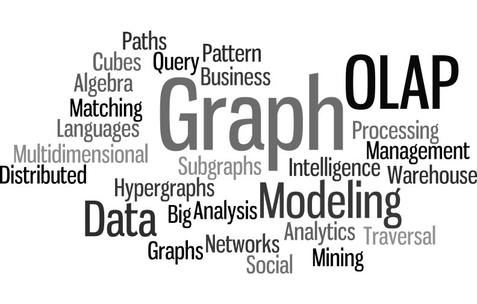

Welcome to my blog.
Here, I'll share my thoughts on topics related to the existing field of graphs analytics.
Stay tuned !
Research Topics
- Graph Management
- Distributed Graph Processing
- Graph Analytics
- Business Intelligence
- OLAP
Publications
Recommended Readings
Books
Scientific Papers
